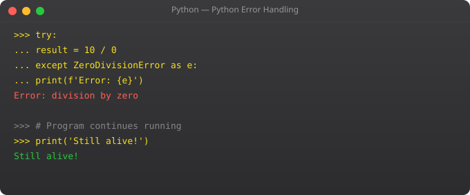

Functions are the foundation of all good Python code. They let you avoid repetition, test logic independently, and build programs from composable pieces. Python functions are first-class objects -- they can be passed as arguments, returned from other functions, and stored in variables. Understanding all of Python's function features is essential for writing professional code.
def greet(name, greeting="Hello", punctuation="!"):
return f"{greeting}, {name}{punctuation}"
print(greet("Suraj")) # Hello, Suraj!
print(greet("Raj", "Namaste")) # Namaste, Raj!
print(greet(name="Priya", greeting="Hi")) # Hi, Priya!def add_all(*args):
return sum(args)
print(add_all(1, 2, 3)) # 6
print(add_all(10, 20, 30, 40)) # 100
def create_profile(**kwargs):
for key, val in kwargs.items():
print(f" {key}: {val}")
create_profile(name="Suraj", city="Mumbai", role="DevOps")
# Combining all argument types
def mixed(required, default="val", *args, **kwargs):
print(f"required: {required}, default: {default}")
print(f"extra args: {args}")
print(f"keyword args: {kwargs}")
mixed("a", "b", 1, 2, 3, x=10, y=20)square = lambda x: x ** 2
print(square(5)) # 25
# Sort list of dicts by field
people = [{"name": "Raj", "age": 22}, {"name": "Suraj", "age": 25}]
people.sort(key=lambda p: p["age"])
# Filter and map
numbers = [1, 2, 3, 4, 5, 6]
evens = list(filter(lambda n: n % 2 == 0, numbers))
doubled = list(map(lambda n: n * 2, numbers))
print(evens) # [2, 4, 6]
print(doubled) # [2, 4, 6, 8, 10, 12]x = "global"
def outer():
x = "enclosing"
def inner():
x = "local"
print(x) # local
inner()
print(x) # enclosing
outer()
print(x) # global
# global keyword
counter = 0
def increment():
global counter
counter += 1
increment()
increment()
print(counter) # 2import time
from functools import wraps
def timer(func):
@wraps(func)
def wrapper(*args, **kwargs):
start = time.time()
result = func(*args, **kwargs)
elapsed = time.time() - start
print(f"{func.__name__} took {elapsed:.4f}s")
return result
return wrapper
@timer
def process_data():
time.sleep(0.3)
return "done"
process_data() # process_data took 0.3001s*args collects extra positional arguments into a tuple. **kwargs collects extra keyword arguments into a dict. def func(*args, **kwargs) accepts any combination of arguments.
A small anonymous function: lambda x: x*2. Used as sort keys, filter conditions, and map functions. For anything complex, use a regular def -- readability matters.
Python uses LEGB order: Local, Enclosing, Global, Built-in. Variables defined in a function are local. Use global keyword to modify global variables from inside a function.
A function that takes a function, wraps it with extra behaviour, and returns the wrapped version. @decorator is syntactic sugar for: func = decorator(func). Used for logging, timing, and access control.
Lambda for simple one-liners used as arguments to other functions. def for anything that needs a docstring, multiple lines, or will be reused. When in doubt, def is clearer.
In Part 8, we cover file handling -- reading and writing files, CSV, and JSON.
← Back to Blogdef make_multiplier(factor):
"""Factory function -- returns a configured function."""
def multiplier(x):
return x * factor
return multiplier
double = make_multiplier(2)
triple = make_multiplier(3)
print(double(5)) # 10
print(triple(5)) # 15
# Real use case: create database-aware functions
def make_db_query(table_name):
def query(limit=10):
return f"SELECT * FROM {table_name} LIMIT {limit}"
return query
get_users = make_db_query("users")
get_orders = make_db_query("orders")
print(get_users(limit=5)) # SELECT * FROM users LIMIT 5
print(get_orders()) # SELECT * FROM orders LIMIT 10from functools import lru_cache, partial, reduce
# Memoize expensive function calls
@lru_cache(maxsize=128)
def fibonacci(n):
if n < 2:
return n
return fibonacci(n-1) + fibonacci(n-2)
print(fibonacci(50)) # Fast -- cached previous results
print(fibonacci.cache_info()) # CacheInfo(hits=48, misses=51, ...)
# partial: pre-fill function arguments
def send_email(to, subject, body, priority="normal"):
print(f"Sending to {to}: {subject} [{priority}]")
send_urgent = partial(send_email, priority="urgent")
send_urgent("user@example.com", "Critical Alert", "Server down!")
# reduce: aggregate a sequence
product = reduce(lambda x, y: x * y, [1, 2, 3, 4, 5])
print(product) # 120from typing import Optional, Union, Callable, TypeVar, ParamSpec
T = TypeVar("T")
def retry(max_attempts: int, delay: float = 1.0) -> Callable:
"""Decorator factory: retry failed functions."""
import time, functools
def decorator(func: Callable) -> Callable:
@functools.wraps(func)
def wrapper(*args, **kwargs):
for attempt in range(1, max_attempts + 1):
try:
return func(*args, **kwargs)
except Exception as e:
if attempt == max_attempts:
raise
print(f"Attempt {attempt} failed: {e}. Retrying in {delay}s...")
time.sleep(delay)
return wrapper
return decorator
@retry(max_attempts=3, delay=2.0)
def fetch_api_data(url: str) -> dict:
import requests
response = requests.get(url, timeout=10)
response.raise_for_status()
return response.json()import asyncio
import aiohttp
async def fetch_url(session, url):
async with session.get(url) as response:
return {"url": url, "status": response.status,
"size": len(await response.text())}
async def fetch_all_urls(urls):
async with aiohttp.ClientSession() as session:
tasks = [fetch_url(session, url) for url in urls]
results = await asyncio.gather(*tasks, return_exceptions=True)
return results
# Fetch 10 URLs concurrently instead of sequentially
urls = [
"https://api.github.com",
"https://httpbin.org/get",
"https://jsonplaceholder.typicode.com/posts/1",
]
results = asyncio.run(fetch_all_urls(urls))
for r in results:
if isinstance(r, Exception):
print(f"Error: {r}")
else:
print(f"{r['url']}: {r['status']} ({r['size']} chars)")from functools import partial
# Create specialised functions from general ones
def validate(value, min_val, max_val, field_name):
if not min_val <= value <= max_val:
raise ValueError(f"{field_name} must be between {min_val} and {max_val}")
return value
validate_age = partial(validate, min_val=0, max_val=150, field_name="age")
validate_price = partial(validate, min_val=0, max_val=1e6, field_name="price")
validate_rating = partial(validate, min_val=1.0, max_val=5.0, field_name="rating")
print(validate_age(25)) # 25
print(validate_rating(4.5)) # 4.5
# validate_age(200) # ValueError: age must be between 0 and 150